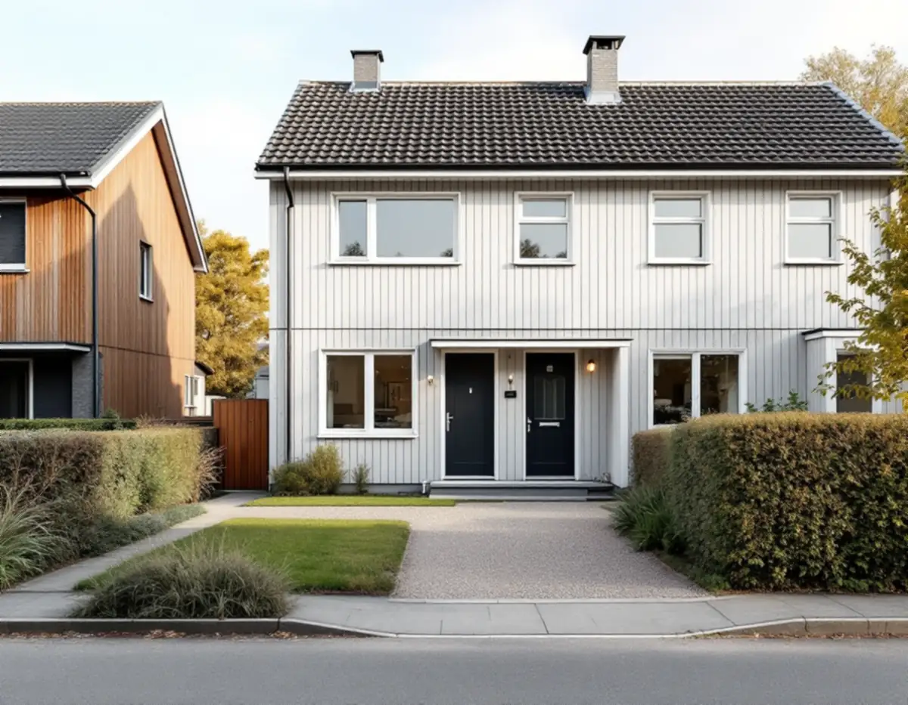
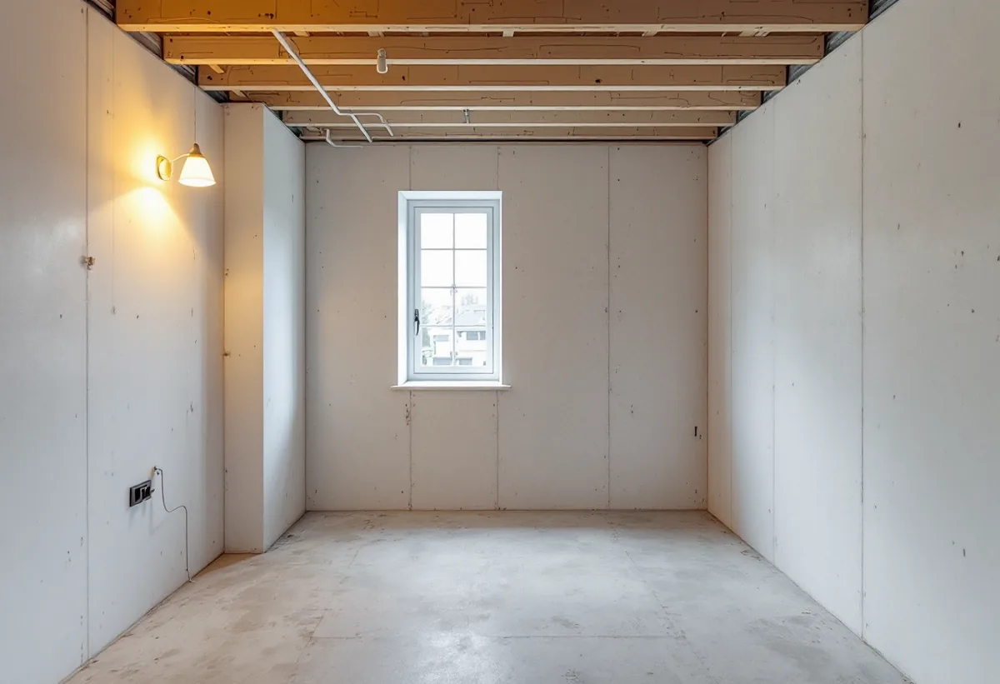

Besök på tomten
Vi går igenom huset, tomten och vad du vill åstadkomma.
I Järfälla handlar många byggfrågor om att få plats med fler: en extra bostad i villan, en tillbyggnad för en växande familj eller ett nytt hus på en del av tomten. Geal Entreprenad AB bygger i Järfälla som total entreprenad. Du har en kontakt, ett skriftligt avtal och vi tar ansvar för att delarna passar ihop.

Järfällas gällande översiktsplan, Järfälla – nu till 2030, antogs 2014 och bedömdes som aktuell 2018. Där beskrivs Skälby som ett område med bibehållen karaktär, där en varsam förtätning är möjlig med bostäder som är anpassade till den befintliga bebyggelsen, till exempel med likartad utformning och likartad placering på tomten.
Hur det kan gå till syns i ett planuppdrag från 2020 för två parhus vid Hjälmvägen i Skälby. Ägarna ville dela två fastigheter till fyra och begärde planbesked. Den gällande detaljplanen angav en minsta fastighetsstorlek på 850 kvadratmeter, att huvudbyggnaden inte fick vara större än 140 kvadratmeter och att garage och uthus fick vara högst 30 kvadratmeter. Kommunen påpekade att varje ny fastighet får egna lovfria åtgärder, vilket kan göra att mer av marken hårdgörs och att mer dagvatten rinner till grannarna.
Av samma handling framgår att kommunen kan prioritera planärenden för privata bostadstomter där minst två fastighetsägare samordnar sig och begär planbesked tillsammans, och att kostnaden för detaljplanen bekostas av sökanden genom ett plankostnadsavtal.

Enligt plan- och bygglagen krävs inte bygglov för att inreda ytterligare en bostad i ett enbostadshus som inte är ett komplementbostadshus. Järfälla kommun räknar upp det bland de lovbefriade åtgärderna, tillsammans med tillbyggnad, komplementbostadshus och att ändra en komplementbyggnad till komplementbostadshus.
Kommunen understryker att lovbefriade åtgärder fortfarande omfattas av Boverkets byggregler och kan kräva anmälan och startbesked, till exempel vid väsentliga ändringar av brandskydd, bärande konstruktion, vatten, avlopp och ventilation. En ny lägenhet i källaren eller på övervåningen innebär nästan alltid något av det.
Ska du bygga ett nytt en- eller tvåbostadshus och samtidigt planera en lovfri tillbyggnad eller en extra bostad, ska de enligt kommunen tas med i bygglovsansökan för huset. Annars måste du vänta med dem tills huset har fått slutbesked.
Järfälla kommun ger två råd som passar varje byggprojekt. Det första är att dokumentera hur du uppfyller reglerna, till exempel för tillgänglighet och brandskydd, och att spara ritningar och skriftliga grannmedgivanden, eftersom kommunen inte längre arkiverar dem för lovbefriade åtgärder. Det andra är att se till att de du anlitar har rätt kompetens och kan verifiera de tekniska lösningarna, eftersom det är du som byggherre som har det juridiska ansvaret.
Vi lämnar därför över ritningar, beskrivningar och dokumentation när bygget är klart, så att du har dem den dag huset ska säljas eller byggas om. Vill du ha ett formellt beslut kan du söka frivilligt bygglov, något kommunen beskriver som en trygghet inför en större investering.
Enligt arbetsmiljölagen är den som låter utföra ett byggarbete byggherre och ska bland annat utse byggarbetsmiljösamordnare för planering och projektering och för utförandet. Anlitar du som privatperson ett företag som självständigt ansvarar för planeringen eller utförandet, och konsumenttjänstlagen gäller för uppdraget, ligger de skyldigheterna i stället på företaget vid arbetets utförande, om ni inte skriftligen har avtalat något annat.
Det är en av fördelarna med en total entreprenad. Du köper hela projektet av ett företag, vi samordnar alla som arbetar på tomten och du slipper hålla ihop flera avtal. Läs mer om hur det fungerar på sidan om byggfirma i Stockholm, eller om renovering av hela villan.
Vi går igenom huset, tomten och vad du vill åstadkomma.
Tomtstorlek, byggrätt och om planbesked behövs kontrolleras först.
Ett skriftligt förslag där det framgår vad som är ROT-arbete.
Vi tar fram underlag för bygglov, anmälan eller frivilligt lov.
Vi samordnar stomme, tak, installationer och ytskikt.
Du får dokumentationen och vi går igenom arbetet tillsammans.
Rotavdraget är 30 procent av arbetskostnaden, med högst 50 000 kronor per person och år och högst 75 000 kronor inklusive rutavdrag. Material, resor och utrustning ger inget avdrag.
Att riva väggar och göra om planlösningen när en extra bostad inreds kan ge avdrag. Ett helt nytt hus på en avstyckad tomt ger det aldrig, och inte heller ett garage, en friggebod eller annan fristående byggnad. En tillbyggnad ger avdrag om den sitter ihop med husets yttervägg till minst 75 procent av någon sida eller har en dörr in till huset. Vi drar avdraget på fakturan.
Om projektet kräver ny detaljplan eller lantmäteriförrättning, hur mycket av huset som berörs när en extra bostad ska få eget kök, badrum och brandskydd, och hur en tillbyggnad grundläggs och ansluts. Efter ett gratis platsbesök får du ett skriftligt kostnadsförslag.
Total entreprenad för villan.
Byggfirma →Takbyte, takbesiktning och plåtarbeten.
Takläggare i Järfälla →Jakobsberg, Viksjö och Kallhäll.
Takrenovering i Järfälla →Radhus, kedjehus och souterränghus.
Badrumsrenovering i Järfälla →Underhållsmålning i rätt tid.
Fasadmålning i Järfälla →Kedjehus, sekelskiftesvillor och parstuga i Stäket.
Fasadrenovering i Järfälla →Bruksvillor, radhus och 70-talsfönster i Järfälla.
Fönsterbyte i Järfälla →Bottenstycken, bleck och vita omfattningar.
Fönsterrenovering i Järfälla →Kedjehus, egnahem och gamla golvskikt.
Golvläggare i Järfälla →Slipa och behandla trappan i huset.
Golvslipning i Järfälla →Kedjehus, radhus och souterräng.
Köksrenovering i Järfälla →Putsade radhus, kedjehus och villor i Järfälla.
Målare i Järfälla →Stuprör, skärmtak och plåttak i Järfälla.
Plåtslagare i Järfälla →Förgårdar, förråd och ytterdörrar.
Snickare i Järfälla →Ny tapet på skivväggar i radhus.
Tapetsering i Järfälla →